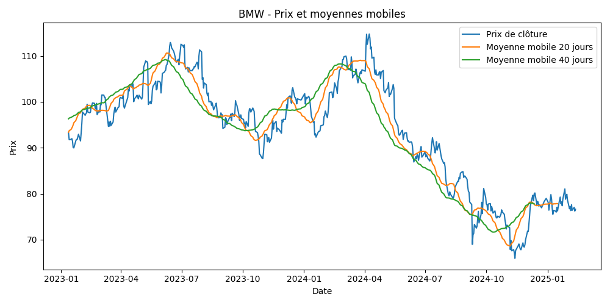

Le Contexte
Dans le cadre de ma Licence, j'ai analysé la dynamique des prix d'entreprises cotées (ex: BMW). L'objectif était de comprendre les fluctuations du marché et de modéliser les risques associés à l'aide d'indicateurs techniques.
Méthodologie
- Collecte des données historiques de marché (2023-2025).
- Calcul des moyennes mobiles (20 et 40 jours) pour identifier les tendances.
- Comparaison des signaux d'achat et de vente technique.
Résultats Clés
Le graphique ci-dessous montre l'évolution du prix de clôture par rapport aux moyennes mobiles. On observe clairement les croisements indiquant les retournements de tendance, validant la pertinence du modèle sur la période étudiée.

Figure 1 : Analyse technique de l'action BMW (Prix vs Moyennes mobiles)